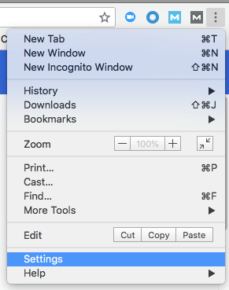
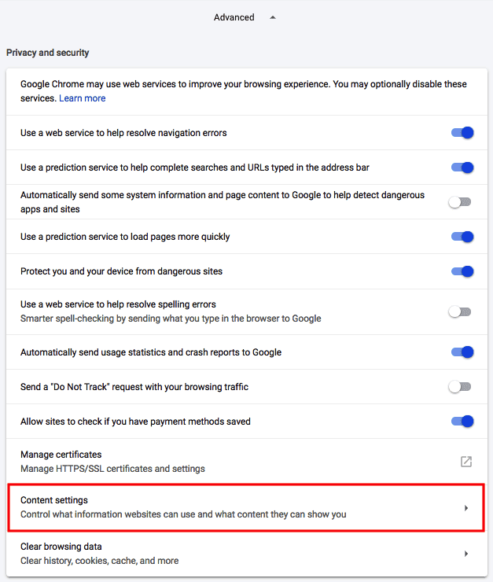
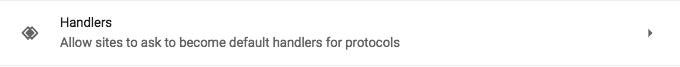
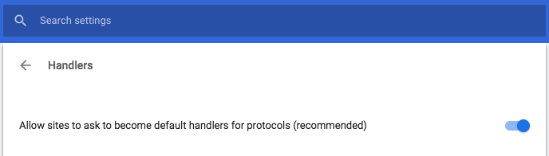
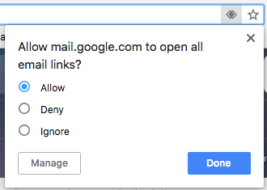

Before you can actually set Gmail as your default email client, you need to allow Gmail to ask you permission. To do so, open a window of your Chrome browser and click the three-dots icon next to the URL address bar. Then click "Settings," second from the bottom.
In the Settings tab that appears in your Chrome browser, scroll down to the bottom and click "Advanced." This will expand your settings options. In the first group that appears, "Privacy and security," click "Content settings" second from the bottom.
In the next group of options that appears, find the "Handlers" setting near the bottom of the list. It'll look like this:
Click this setting and you'll see at least one horizontal switch where you can allow any website you visit to ask you if it can become Chrome's default "handler." Switch this setting to the on position, as shown below. (If it's already switched on, switch it off and on again -- this can prompt Gmail to re-ask you to become your default handler, if you've been asked before and want to change your answer.)
Once your Ask protocol has been switched on for default handlers, open Gmail in a new tab and make sure you're signed in.
At the end of your URL's address bar, you'll see a new icon that looks like two gray diamonds intertwined with each other. Click this icon and you'll see the following dropdown menu:
Click "Allow" in response to the question Chrome asks you, as shown above, and then hit Done. You'll officially have all "mailto:" links open in Gmail if they come from your Chrome browser.